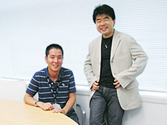
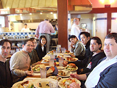

「クリエイターズ インタビュー」 第18回目は、
『ソニック ラッシュ アドベンチャー』ディレクターの大隅 栄えを紹介！
プロフィール：
大隅 栄え（おおすみ さかえ）
セガ/第一GE研究開発部/プランニングセクション
『ソニック ラッシュ』アシスタントディレクター
『ソニック ラッシュ アドベンチャー』ディレクター
今回は、2007年10月18日発売予定『ソニック ラッシュ アドベンチャー』ディレクターの大隅さんにお話しを伺いたいと思います。前作『ソニック ラッシュ』からの最新作となりますが、今回はどのようなゲーム内容となっているのでしょうか？
今回は、サザン島という南洋の島を舞台に、ソニックがシリーズ初の海洋冒険に挑みます。
サザン島から乗り物を操縦して航海の旅に出ることで、様々な島を発見して、物語が進んで行きます。冒険の先々では、海賊が敵として登場したり、色々な島でお宝を手に入れたり、海図を広げてさらに未知なる海域を探索したり、隠し島や幽霊船を発見したりと、冒険要素が盛り沢山です。
さらに、WiFiに対応したことで、世界中のプレイヤー同士でレースバトルやリング集めといったミニゲームで対戦をしたり、タイムアタックで記録した各ステージの自己ベストタイムを世界ランキングに登録したりといったことが可能になりました。
世界最速のハリネズミは誰なのか？興味がありますよね？
今回は海洋冒険ということですが、何故このテーマにされたのでしょうか？
今回の企画を考え始めた時に、まず頭の中に浮かんだことは
「今度のソニックの冒険の舞台は一体どこになるのだろうか？」
ということでした。そして、ふと気が付いたのが、海を舞台にした冒険というのはソニックのシリーズの中でも初ということでした。私自身もマリンスポーツが好きで、海を舞台にした海外の小説やTVドラマや映画などのエンターテイメントがかなり好きというのもあったと思います。
ソニックで海洋冒険！これは面白いものができるのではないかと思いました。
日本よりも先に海外地域ではすでに発売されているそうですが、海外での反響はいかがですか？
おかげ様でかなり好評を頂いています！
今年のE3 2007ではIGNという海外で有名なゲームサイトからBest Platformerという賞を頂きました。
欧米の初回出荷では沢山の注文が入っていると聞いています。
新キャラクター「マリン」は、どのように生み出されたのでしょうか？
最初からアライグマというのが決まっていたわけではないのですよ。ブレイズの世界にまずソニックがどうやって巻き込まれて来るのか？
今回海洋冒険にしようというのはあったので、まず島に流れ着く、漂着するというのがあって、そのときにソニックたちは誰に出会うのか？そこからですね。そこから彼らの冒険にきっかけを与えるような存在として生み出されました。
外の海に出たことのない小さい女の子。夢を持っている女の子。将来の夢は船長！こういうところから話に広がりが生まれるんじゃないかというところから始まりました。
ストーリーは、僕と西山プロデューサーとで話し合って決めていきました。キャラクターデザインに関しては、色々な動物の候補をあげている段階から上川さんにも入ってもらいました。
最終的に何故アライグマになったかは… 色んな候補がありましたが、まぁ、水つながりですね（笑）。もしいずれ、プレイヤーキャラに昇格するようなことがあれば（笑）、水鉄砲を持ったキャラクター、アライグマのマリン！として登場してほしいなぁというのもありつつ（笑）。
新キャラクター「マリン」が関西弁なのは何故？
（笑）。やかましいキャラ、活発なキャラ、ソニックたちを巻き込んでしまう、パワーのあるキャラ、という位置づけから、それ（関西弁）が活きるのではないかと。わりと、おてんばでおっちこちょいなところもあったりするので。ソニックとテイルスが巻き込まれてしまうくらい強烈なキャラクターですからね！
引っ込み思案なキャラだったら、多分関西弁にはなっていなかったでしょうね（笑）。
コレ当然、英語圏になるとまた違った表現になっているんですよ。
海外版では、マリンはオーストラリアなまりになっています。南半球にある、南の島、というつながりですね。
プロジェクトを進める上で、何が一番大変でしたか？どんなところで苦労されましたでしょうか？
ご存知のように、ソニックシリーズは世界中で遊んで頂けているので、そのみなさんに楽しんでもらえるように、開発に取り組んでいます。でも、いざ、ほぼ世界同時で発売ということになると、日米欧の時差や物理的な距離に起因するハードルが開発の過程で大きく立ちはだかってきます。
そこでゲームのように異次元を超えることは出来ないので、プロジェクトを進める上で工夫を求められるところになります。ゲーム制作は日本国内で行われていますが、ローカライズやマーケティング、宣伝や営業などは、日本、アメリカ、ヨーロッパなど各地域との連携になります。
各地で色々な人々がそれぞれ担当しているので、コミュニケーションの手段が重要な位置を占めます。
そういった苦労を乗り越えるには、何よりもまず、遠く離れた海外だとしても、実際に現地に出向いて、現地を知り、人を知ることで、国を越えてどのように協力していけるのか、ということを考えることが必要だし、一番大事な点ではないかと思います。
今回はプロジェクト前半の時期にサンフランシスコにあるセガ・オブ・アメリカ（SOA）でフォーカステストというのを行いました。現地の人々に極秘の環境で開発途中のゲームを遊んでもらい、その段階での（色々なご意見の）フィードバックをもらうんです。今回は、現地の担当スタッフと事前の十分な打ち合わせを行うこともできました。おかげで、その後の開発工程に反映する形で大変有意義な時間を費やすことができたと思います。
その中で大変だったのは、サンフランシスコに出張している間に40度もの熱を出してしまったことです。仕事がある関係上そのままダウンしてしまう訳にもいかず、日本人のドクターがいるクリニックで注射を2本も打ってもらい、一晩で無理やり熱を下げました。その時に色々と助けて頂いたSOAのスタッフの方には本当に感謝ですね。
現地の風邪ウイルスに対する免疫が無かったせいかも知れませんが、次回の訪問の際には耐性が付いていると思います（笑）。
この仕事をしていて良かったと思うときはどんなときですか？どんなときが楽しいですか？
このプロジェクトは海外を含め、社内外で多くのスタッフが関わっていますが、仕事をしていて喜びを感じる瞬間は、近い遠いに関わらず、お互いに同じ目的を共有していて、モチベーションが高まっていると感じられる時ですね。